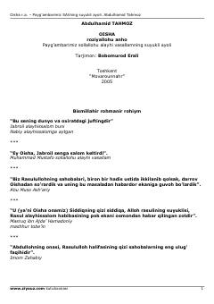

ORPayg'ambarimizning suyukli ayoli Oisha onamiz hayoti haqida.
Bu kitob Payg'ambarimiz Muhammad sollallohu alayhi vasallamning suyukli ayoli Oisha roziyallohu anhoning hayoti, tug'ilishi, oilasi va Rasululloh bilan nikohi haqida so'z yuritadi. Abdulhamid Tahmozning asari Oisha onamizning islom tarixidagi o'rni, ilmiy merosi va sahobalar orasidagi martabasini batafsil yoritadi. Kitob Bobomurod Erali tomonidan o'zbek tiliga tarjima qilingan.